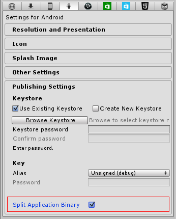

In the Android Publishing Settings you’ll find the option to split the application binary (.apk) into expansion files (.apk + .obb). To find it, go to Edit -> Project Settings -> Player. Then select the Android button, and expand the Publishing Settings section. The setting is a checkbox marked “Split Application Binary”.

The Split Application Binary publish option for Android
This mechanism is only necessary when publishing to the Google Play Store, if the application is larger than 100 MB. See http://developer.android.com/guide/google/play/expansion-files.html for further information on APK Expansion Files.
When the Split Application Binary option is enabled the player executable and data will be split up, with a generated .apk (main application binary) consisting only of the executable (Java, Native) code (around 10MB), any and all script / plugin code, and the data for the first scene.
Everything else (all additional scenes, resources, streaming assets …) will be serialized separately to a APK Expansion File (.obb).
When starting an .apk built with Split Application Binary enabled the application will check to see if it can access the .obb file from it’s position on the sdcard (location explained in the Apk Expansion docs from Google).
If the expansion file (.obb) cannot be found, only the first level can accessed (since the rest of the data is in the .obb).
The first level is then required to make the .obb file available on sdcard, before the application can proceed to load subsequent scenes/data.
If the .obb is found the Application.dataPath will switch from .apk path, to instead point to .obb. Downloading the .obb is then not necessary.
The contents of the .obb are never used manually. Always treat the .apk+.obb as a unique bundle, the same way you would treat a single big .apk.
The Split Application Binary option is not the only way to split an .apk into .apk/.obb (other options include 3rd party plugins/asset bundles/etc), but it’s the only automatic splitting mechanism officially supported.
Downloading of the expansion file (.OBB)
The expansion file (.obb) may (but it’s not required, in its current form at least) to be hosted on the Google Play servers.
If the .obb is published together with the .apk on Google Play, you must also include code to download the .obb. (for those devices that require it, and for scenarios where the .obb is lost)
The asset store has a plugin (adapted from the Google Apk Expansion examples) which does this for you. It will download the .obb and put it in the right place on the sdcard. See http://u3d.as/content/unity-technologies/google-play-obb-downloader/2Qq
When using the asset store plugin you need to call that plugin from the first scene (because of the reasons explained above).
The asset store plugin can also be used to download .obb’s created in some other way (single data file, a zip of asset bundles, etc) - it’s agnostic to how the .obb was created.
To test the obb downloader, the android device needs to be logged in as correct google account (tester account).